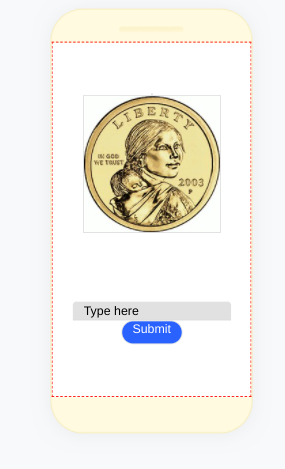

1. The new type of event we haven't used before is the when timer fires event.
2. So far, we have use events like when screen starts, canvas loads, button or image clicked, sprite clicked, variable initializes or changes, list item click, text_input submits or unfocuses, and maybe more.
3. The advantages of writing procedures in programming is being able to use the same line of code without having to rewrite the code over and over again.
1. Investigating - looking for a project to do, Designing - create a picture of the solution, Prototyping - creating the picture into actual model, Testing - making sure if it works or not.
2.
a. Scoring - displays current score.
Winning score - displays player's goal.
Reset - resets game.
b. Scoring - tells you your score as you tap the light bulb.
Winning score - the goal that the player has to reach.
Reset - resets the game after you beat it and click the button.
c. The reset procedure resets everything to default so the user can start again.
This line of code activates when score changes and when score = 5, the user wins.
3. The reset procedure resets everything to default so the user can start again.
4. If the game cannot reset, then it would stop at the winning score and cannot be played unless the whole app is reset (exiting and reopening app). The reset button set everything to its default start allowing the user to use the app with exiting.
1.
2. The square100 procedure would draw the head of the face and the Position/DrawLeftEye procedure would go to the area of the left eye and draw it. Together they form a head and the left eye.
3. The draw face procedure lifts the pen up or down and uses other procedures to draw the face.
4. The algorithm would first create the head, then move and create the left eye, move and create the right eye, move and create the mouth, and end off going back to the start.
5. Weaknesses would include having to create more procedures for moving a longer length, not being able to create different shapes like triangles or circle, and more.
6. I would add the option to choose more variables like rotating different degrees. This would allow the user to create shapes like triangles and circles.
1.
2.

3. Yes because the number of heads and tail change a lot.
4. If chocolate: get chocolate, else if strawberry: get strawberry, else: get vanilla
5. 4
6. That's the problem with randomness, you can never be sure.
1. Yes it would be possible but it would probably take a very long time.
2. I don't think slot machines are fair because if it was actually random then people would have a higher chance of winning.
3. I think that if a slot machine is used up a lot and nobody has had any success, the chances of winning would get higher. I think this because they don't want people to think you can never win.
1. Bill Nye's solar model is a physical model and the Second Life model is a virtual model. Bill Nye's model spacing is a lot smaller than the actual distances of planets but the Second Life model's spacing is so small that the planets look like they are right next to eachother.
2. Hypothesis: If there were more wolves than bunnies, the wolves would eventually lose their only food source and die off.
Prediction: The wolves and bunnies would end up extinct.
Result: The wolves and bunnies became extinct, but there is a chance of bunnies outliving the wolves.
3. With more predators and preys, the simulation becomes more inconsistent since there are more alternative possibilities and causes to the decline in population.
This could introduce bias because both could be biased to the side with a decreasing population.
4.
a. One benefit is that you don't have to create a building to eventually destroy, saving money.
b. A limitation is that the possibilities are pretty endless and may not be very accurate.
5. A model that I can use in my everyday life is a globe. The detail captured include states, countries, and oceans. Things that it leaves out is citys, lake and river names, population and a lot information people may want to know.
1.
a. The data collected from users include location, past searches, device detection and more.
b. No, the user does not know because we didn't label any conditions of the app.
c. No because some things are needed like device and device size unless the user wants to write everything including device model.
2. Social media takes our data and gives it away, they do this to gain specified ads for users and they make money from it. They also take data to give the user an experience they would like, making them more addicted to use. They also have easy access to people's addresses, their names, and more data people could have.
3. Yes it is possible because you have everything you need. An address gives you the specific house they live in, bringing the numbers down from billions to less than 20. The gender and birthdate aren't the same for everyone so it would be easy to know who exactly they are searching for since it is very specific.
4. In social medias, the data is consumed is by the user through likes, who they follow, and what data they give inlcuding personal information and photos they give access to. The data then goes through the database and is stored as their own profiles. The data that they store doesn't stay stored but is being used to sell to other companies. The data produces ads for specific people and can even show recommendations from other people you have followed. It may also shows things that you are interested in, encouraging the user to keep coming back.
5. The Privacy Act is not very effective because many websites can still steal your data.
6. Yes, but I should not get into any social media or atleast put my information on there.
7. We leave "Digital fingerprints and footprints" by simple actions on any technological device that can connect to the internet. For example, leaving a message on instagram.
8. The Patriot Act is a law that allows the US government to surveil people's lives. The significance is to stop any planned and upcoming terrorist attacks.
9. The program PRISM is a tool that is used by the US National Security Agency. It collects private electronic data belonging to people who use major internet services. It is a negative implication because they can have access to everything everyone has done, going against people's privacy.
10. Who Owns Your Data?
The website talks about ways that people can prtoect their data. They introduce the Online Privacy Act that was proposed in 2019. A solution that they talk about includes requiring a user's consent form about what data they can or cannot use. They also want to protect people by banning doxes which stop people from posting very personal and malicious data about one's self or another.
© 2004- alvital.com. All rights reserved. Please see our privacy policy for more details.